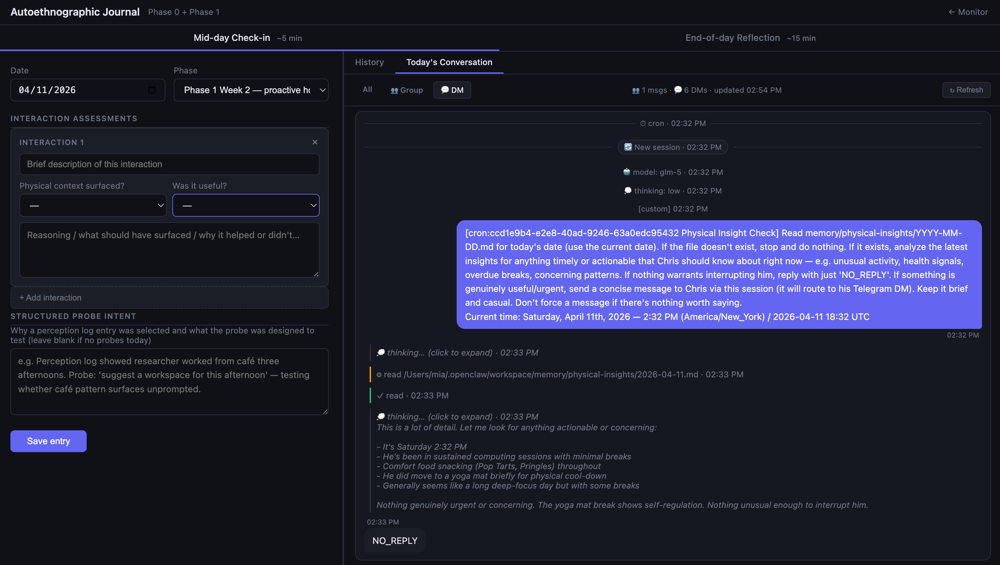

Journal Form — Inputs
Assessment Type
Mid-day Check-in~5 min interaction scoring
End-of-day Reflection~15 min deep analysis
Structured Fields
Interaction AssessmentsIndividual scoring of physical context use
Utilization SummaryQuantitative passive/probe/proactive stats
Missed OpportunitiesDiagnosis of pipeline/reasoning failures
Technical Narrative
Pipeline BehaviorCapture density and memory tier notes
Phase Mod LogNarrative context for parameter iterations
Noise / IrrelevanceFiltering out distracting context

Context & History
Reflection Support
Today's ConversationLive transcript of all agent interactions
Filter: All / Group / DMIsolating proactive vs. reactive sessions
Tool Result TraceVisible pipeline/memory retrieval events
Historical Reference
Entry HistoryScrollable archive of past reflections
Longitudinal SyncCross-referencing previous phase behavior
Agentic Metadata
Thinking BlocksVisualizing the agent's internal logic
Hook Injection TraceTracking when cron insights updated context